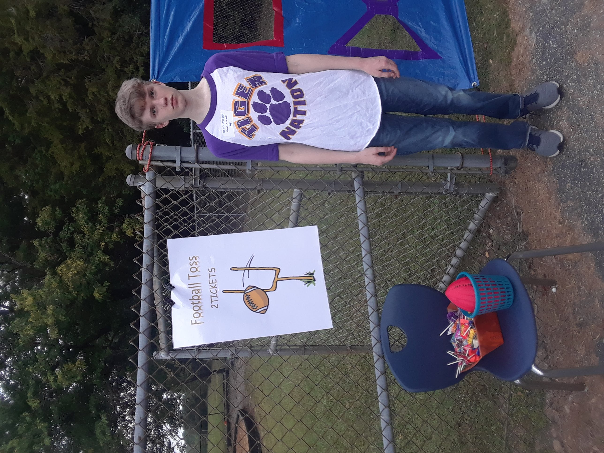

Education
Wilson High School
- Diploma
- MYP Programme Certificate
In 2023 I received my diploma from Wison High, along with my MYP Programme certificate, which I spent a total of 6 years in.
Florence-Darlington Technical College
- Certificate in General Technology
- Associates Degree in Web Applications and Programming
At FDTC, I began majoring in Network Systems Management for about a year, where I learned how to configure routers and servers, but then changed to Web Applications and Programming because I loved the coding aspect more. I also learned how to navigate the Windows operating system, including its Command Prompt, Control Panel, and Task Manager.
At the time of writing this (2/15/2025), I am set to graduate in May of this year with a Certificate in General Technology, and an Associates in Web Applications and Programming.
IB Programme
During the MYP and IB Programmes at Wilson, I had the opportunity to learn in Higher-Level classes and study skills not usually available, such as HTML, CSS, Python, and Art. They were designed to create educated, well-rounded citizens, and required many hours of community service throughout each year.

7th Grade MYP Community Service